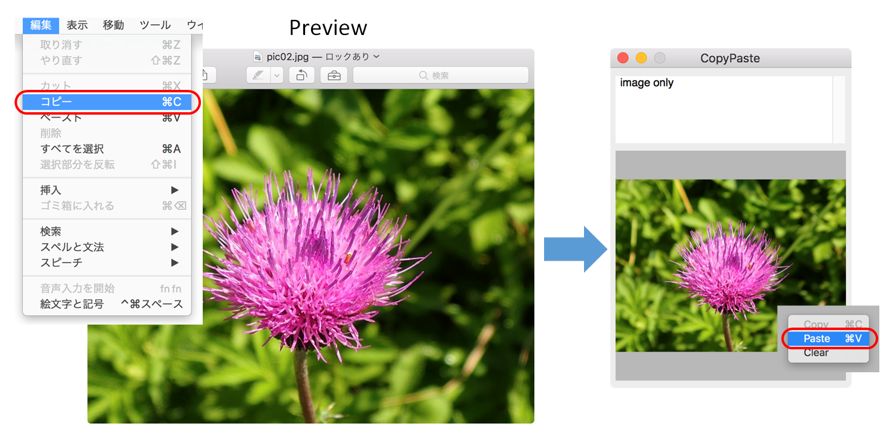
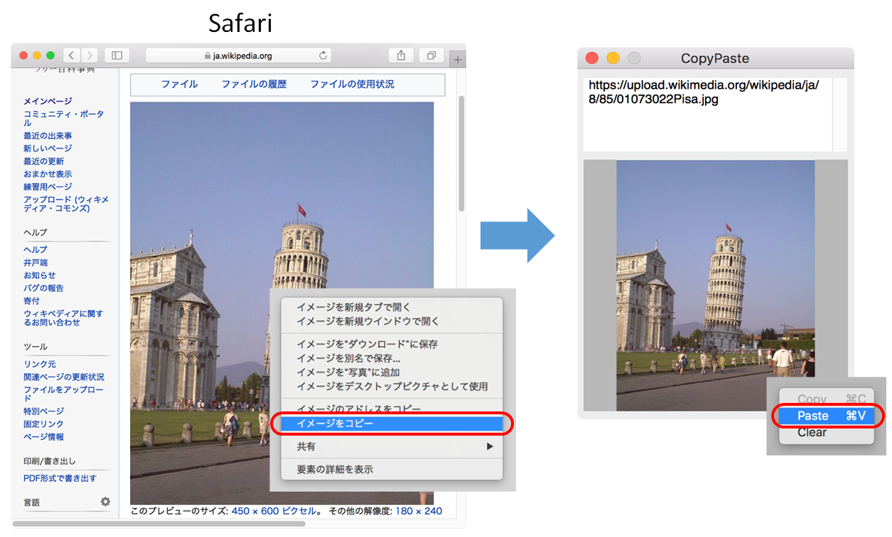
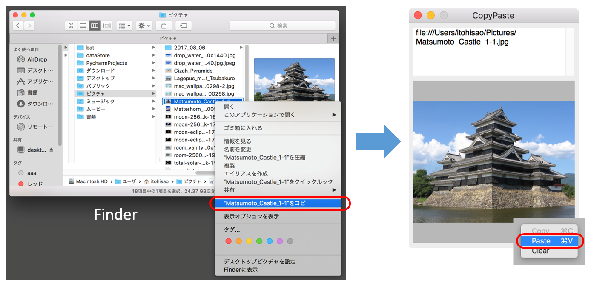
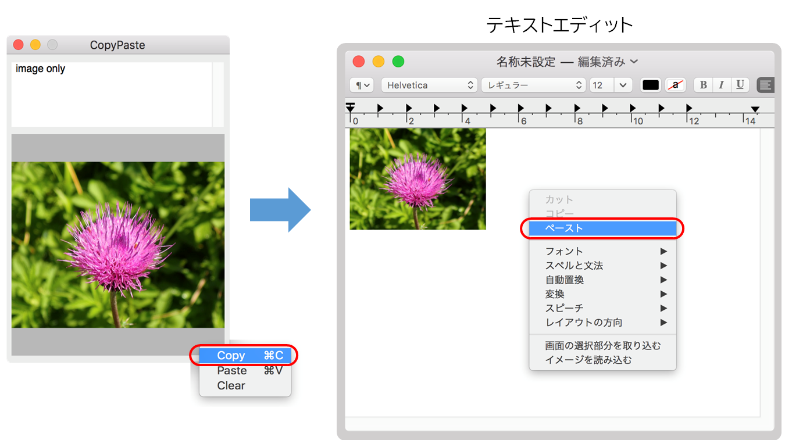
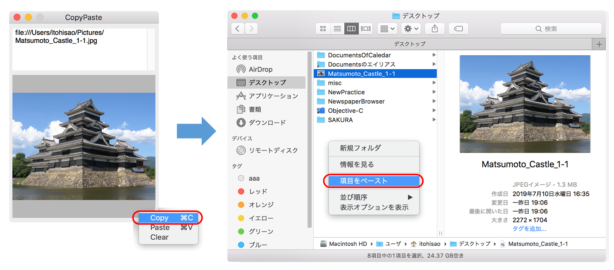

コピー＆ペースト
UTI（uniform type identifier）
ペースト（貼り付け）処理
① イメージエディタ（Preview, Grab）に表示されている画像をコピーし、本アプリのビュー上にペーストして画像を表示する。

② ブラウザ（Safari）に表示されている画像をコピーし、本アプリのビュー上にペーストして画像を表示する。URLアドレスをテキストビューに表示する。

③ Finderの画像ファイル（jpeg, png）をコピーし、本アプリのビュー上にペーストして画像を表示する。URLアドレスをテキストビューに表示する。

アプリケーションの実装
(1) ペーストボード（NSPasteboardクラス）の取得
アプリケーション間を移動するオブジェクトは、システムにひとつだけ存在するペーストボードオブジェクトを仲介して受け渡される。ペーストボードは用途によりいくつかの種類があるが、Copy&Pasteで使用するのは、generalPasteboard である。
(2) ペーストボードに格納されているオブジェクトの種類を知る
オブジェクトの種類を指定する方法は２通りある。
（A）UTIによる指定
UTI（uniform type identifier）は、オブジェクトの種類を特定の文字列で表現したもので、形式はURLアドレスのドメインに似ている。
「public.item」を頂点とした階層構造になっていて、階層が細分化するに従い具体的なオブジェクトタイプになる。CocoaフレームワークにおけるUTI一覧 に全種類を示す。これを利用すれば、あらゆる種類のオブジェクトを個別に、または集合的に指定することができる。
NSPasteboardTypeは、プログラムで使用頻度の高い代表的なUTIをCocoaフレームワークの中で定数に定義したものである。
ペーストボードに指定した種類のオブジェクトがあるか判定する。
[ 補足 ]
UTIは階層構造になっているので、public.imageからpublic.tiffが派生し、public.urlからpublic.file-urlが派生する。
Cocoaフレームワークでは、ペーストボードに取り込まれた画像イメージはtiff形式のオブジェクトに変換される。
UTIを指定してペーストボードから読み込むときは、public.tiffを指定しなくてはならない。（スーパクラスのpublic.imageでは読み込めない）
（B）Class型による指定
オブジェクトの種類をCocoaフレームワークのクラスで指定する。オブジェクトをそのクラスのオブジェクトとして扱うことができる。
(2) ペーストボードからオブジェクトを読み込む
(A) UTIを指定して読み込む方法
(B) クラスを指定して読み込む方法
[ 補足 ]
クラスを指定する方法は操作の汎用性に優れている。NSImageクラスは、イメージファイルの種類の違いをカプセル化しているので、"tiff" という意識をすることなくオブジェクトを読み込むことができる。
URLオブジェクトを読み込む簡単な方法
(3) ペーストボードから読み込んだURLからオブジェクトを読み込む
Finderのファイル名をコピーしてペーストすると、ペーストボードからURLオブジェクトのみが読み込まれる。
URLのファイルの種類を判定する。ファイルがUTI（public.image）に適合していればファイルオブジェクトを読み込む。
[ 補足 ]
ファイルのUTIを調べる
UTIの判定はファイル名の拡張子に基づいている。拡張子を（mv、cpコマンドで）変えたり削除したりすると機能しなくなる。
コピー処理
アプリケーションの仕様
ビュー上のイメージオブジェクトをペーストボードに書き出す。テキストビューにURLアドレスが表示されていたらURLオブジェクトに変換しペーストボードに書き出す。コピー＆ペーストを実装しているアプリケーションはそれらをペーストボードから読み込むことができる。
① ビュー上のイメージをコピーし、リッチテキストエディタ（テキストエディット）へペーストする。

② ビュー上のイメージとURLオブジェクトをコピーし、Finderの特定のディレクトリへペーストする。ファイルのコピーと同じ。

* Finderの仕様では、URLオブジェクトのみ使用しているようだ。
アプリケーションの実装
(1) ペーストボード（NSPasteboardクラス）の取得
(2) ペーストボードにオブジェクトを書き出す
ソースコード
AppDelegateクラス コピー＆ペースト処理
CPViewクラス コンテントビュー（コンテキストメニューを表示する）
UAViewクラス イメージを表示するビュー（ドラッグ＆ドロップ機能）
NSView+UAViewDelegate ドラッグ＆ドロップで使用するカテゴリ